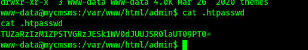

netdiscover
nmap
gobuster
nikto
dirb
mysql
Para esto, programé una aplicación para automatizar el análisis, está en constante desarrollo y usa python3
Comenzamos buscando la ip con netdiscover.
Entramos a la página con la dirección que obtuvimos en el explorador.

Revisamos los archivos y encontramos un acceso a mysql.
Justo cuando iba a hacer un bruteforce con hydra, escribí root: root y tuve acceso.
Vamos directamente con show databases y show tables, para ir a la zona de usuarios y con select * from cm_users, podemos ver que ahí un admin registrado.
Al principio intenté meter un usuario extra con encriptación md5, pero resulta que cms encripta de otra forma, así que no hubo opción más que reemplazar la contraseña actual por otra para lograr accesar.
Ya estando dentro, vamos buscando por alguna forma de subir un archivo o modificar un código, hasta que lo encontramos y metemos una shell con socket para conectarnos al servidor.
Ya estando dentro, buscamos una forma de accesar, resulta que backups tiene permisos de usuario y encontramos una contraseña encriptada, y justo cuando empecé a buscar con john, encontré otro archivo .htpasswd, con un crifrado, que al intentar con base64 me dió un resultado, parece que lo cifrarón dos veces, pero me dió un error, así que lo intente con base32 y hay algo interesante.

Metemos esa contraseña y vemos que logramos logearnos.
Revisamos si hay algo con permisos root antes de buscar por algo más y resulta que python tiene permisos root, así que hacemos una shell.
Listo.